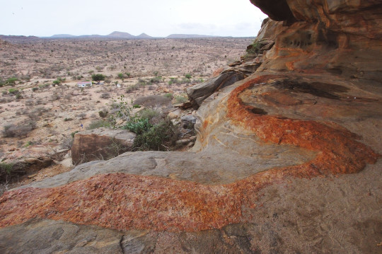
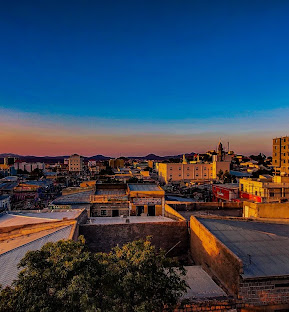

Featured Destinations
Explore some of Somalia's important tourism and heritage locations.

Laas Geel
Laas Geel is known for ancient rock art and archaeological heritage. The site provides visitors with an opportunity to learn about the region's ancient history and cultural heritage.

Mogadishu
Mogadishu is Somalia's capital city and has a long history connected to trade, culture and the Indian Ocean.

Kismayo
Kismayo is a coastal city associated with beaches, marine environments and nearby natural attractions. Tourism can create opportunities for local businesses and communities.

Berbera
Berbera is an important coastal location with historic connections to trade and maritime activity. Its coastline offers potential for tourism development.

Zeila
Zeila is a historic coastal settlement with connections to trade, religion and regional history. It provides opportunities for cultural and heritage tourism.

Somali Culture
Somali culture includes poetry, music, food, traditional clothing, crafts and hospitality. Cultural tourism can help preserve and promote local traditions.